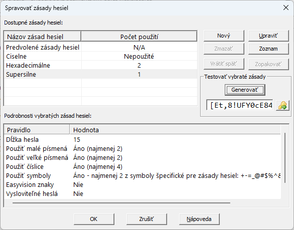
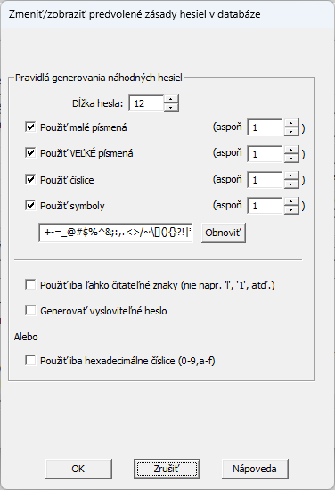
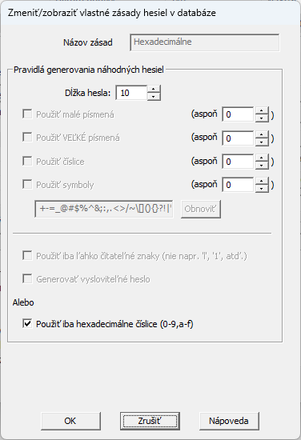

PasswordSafe V3.28 a novšie verzie poskytujú možnosť vytvárať a spravovať Vlastné zásady hesiel, ktoré sa budú odlišovať od predvolených zásad hesiel v databáze. Tieto sú špecifické pre databázu a sú uložené v hlavičke databázy. Každý záznam v databáze potom môže používať rôzne zásady hesiel na generovanie, napr. iba heslá obsahujúce čísla alebo iba 10-znakové heslá zložené z malých/veľkých písmen.
Otvorte položku "Zásady hesiel..." v menu Spravovať. Prostredníctvom dialógového okna možete upraviť aktuálne predvolené zásady hesiel databázy a vytvoriť, upraviť alebo odstrániť akékoľvek nové "vlastné" zásady. Po výbere zásad sa podrobnosti o pravidlách generovania hesiel zobrazia nižšie. Môžete tiež zobraziť záznamy odkazujúce na vlastné zásady hesiel kliknutím na tlačidlo Zoznam (alebo kliknutím pravého tlačidla myši) a potom sa vrátiť k podrobnostiam zásad kliknutím na tlačidlo Podrobnosti. Ak sa zobrazí zoznam položiek, môžete dvakrát kliknúť na záznam a zobraziť ho. Ak používa aspoň jeden záznam v databáze konkrétne zásady hesiel, nie je možné takéto vlastné zásady odstrániť, rovnako tak ani predvolené zásady hesiel.
Keď sú vybraté predvolené zásady databázy, môžete použiť tlačidlo Upraviť na zmenu ich hodnôt. Zobrazí sa nasledujúce dialógové okno.
Výberom tlačidla Nový sa zobrazí nasledujúce dialógové okno na pridanie nových zásad hesiel. Počiatočné hodnoty sa preberajú z predvolených zásad hesiel aktuálnej databázy. Okrem bežných kontrol konzistentnosti zadaných informácií musíte pre tieto zásady zadať aj jedinečný názov (v rámci tejto databázy).

Keď sú vybraté vlastné zásady hesiel, môžete použiť tlačidlo Upraviť na zmenu ich hodnôt a zobrazí sa nasledujúce dialógové okno. Názov existujúcich zásad hesiel nemôžete zmeniť, iba upraviť existujúce pravidlá generovania hesiel.
Funkcia Pridať/Upraviť záznam a položka "Generovať heslo" v menu "Spravovať" umožňujú nastaviť ktoré zásady hesiel sa použijú na generovanie náhodného hesla.
Môžete vybrať predvolené alebo ľubovoľné vlasté zásady hesiel a kliknúť na tlačidlo Generovať a vytvoriť náhodné heslo pomocou ich pravidiel. Toto heslo môžete tiež skopírovať do schránky.
Ak je databáza v režime iba na čítanie, nemôžete pridať nové zásady hesiel, upraviť predvolené zásady databázy alebo vlastné zásady hesiel, ani odstrániť nepoužívané zásady hesiel. Môžete si však zobraziť predvolené aj ostatné zásady. Akékoľvek zmeny vykonané v týchto zásadách počas prezerania sa neuložia do databázy.
Na vrátenie poslednej akcie späť a jej zopakovanie môžete použiť tlačidlá Vrátiť späť a Zopakovať (alebo skratky Ctrl+Z a Ctrl+Y) na vrátenie všetkých zmien, ktoré ste vykonali v tomto dialógovom okne, napr. zmenili hodnoty zásad hesiel, pridali nové alebo odstránili nepoužívané zásady hesiel. Ak ste zmenu vrátili späť, môžete ju znova zopakovať, pokiaľ ste medzitým neurobili ďalšiu zmenu. Zmeny sa v databáze neuložia, kým nestlačíte tlačidlo OK, čím zatvoríte toto dialógové okno.
Keď sa databáza exportuje do XML (či už ide o konkrétnu podmnožinu záznamov v databáze alebo o celú databázu), exportujú sa aj všetky vlastné zásady hesiel v aktuálnej databáze. Počas následného importu tohto súboru XML sa do aktuálnej databázy importujú aj všetky vlastné zásady hesiel. Ak už v aktuálnej databáze existujú vlastné zásady hesiel s rovnakým názvom a majú rovnaké nastavenia ako importované zásady, potom ich použijú všetky záznamy ktoré na nich odkazujú pri importe. Ak však importované zásady hesiel majú iné nastavenia ako zásady v databáze s rovnakým názvom, zásady sa importujú pod názvom "Importované - datetime" (kde "datetime" je dátum/čas importu) a všetky importované záznamy, ktoré sa na nich odvolávajú, budú teraz odkazovať na novo pomenované zásady.
Pri importe súboru XML, ak akýkoľvek záznam odkazuje na zásady hesiel ktorá neexistujú v aktuálnej databáze (alebo v importovanom súbore XML), záznam sa zmení tak, aby používal aktuálne predvolené zásady databázy. Do protokolu importu sa navyše umiestnia upozornenia a zobrazia sa ktoré záznamy boli týmto ovplyvnené.
Pri exporte do textového súboru sa exportuje aj názov akýchkoľvek odkazovaných zásad hesiel. Neexistuje však možnosť exportovať aj hodnoty obsiahnuté v týchto zásadách hesiel.
Kvôli vyššie uvedenému obmedzeniu, ak pri importe textového súboru akýkoľvek záznam odkazuje na zásady hesiel, ktoré neexistujú v aktuálnej databáze, záznam sa zmení tak aby používal aktuálne predvolené zásady databázy. Do protokolu importu sa navyše umiestnia upozornenia a zobrazia sa záznamy ktoré boli týmto ovplyvnené.
Keď sa celá databáza alebo podmnožina zlúči do aktuálnej databázy, akékoľvek vlastné zásady hesiel, na ktoré sa odkazuje v zlúčených záznamoch, sa prenesú zo zdrojovej databázy. Ak zásady hesiel s rovnakým názvom už existujú v aktuálnej databáze a majú rovnaké nastavenia ako tie, ktoré sa kopírujú, potom ich použijú všetky zlúčené záznamy, ktoré na ne odkazujú. Ak však importované zásady hesiel majú iné nastavenia ako zásady v databáze s rovnakým názvom, importujú sa pod názvom "Zlúčené - datetime" (kde "datetime" je dátum/čas zlúčenia) a všetky záznamy, ktoré sa na ne odvolávajú, budú teraz odkazovať na novo pomenované zásady.
Podobne, keď sa jeden alebo viac záznamov presunie z inej databázy do aktuálnej databázy pomocou funkcie Drag & Drop, použije sa názov "Drag - datetime" na vytvorenie jedinečných zásad hesiel.